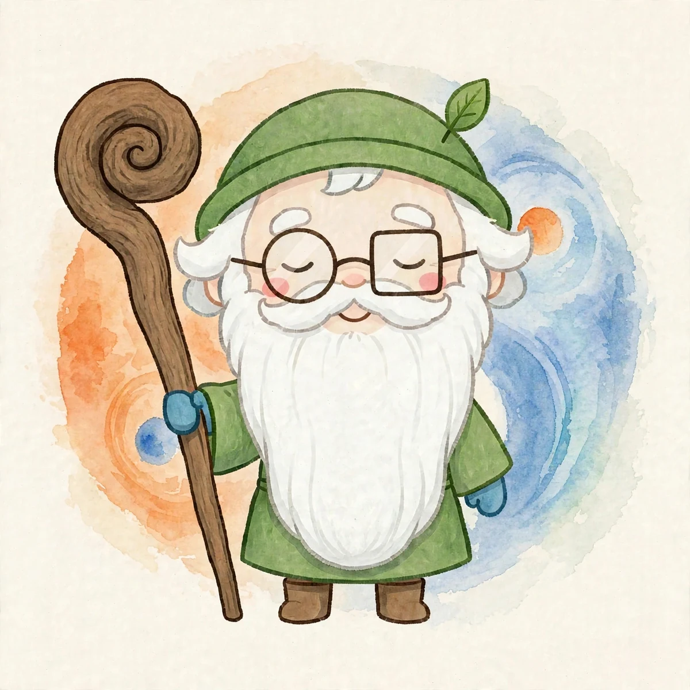

☯ 陰陽メガネ 👓

陰陽の見方を、目で見て練習する場所です。
 食の陰陽辞典
食べ物の陰と陽を、絵と図で引ける辞典です。
›
食の陰陽辞典
食べ物の陰と陽を、絵と図で引ける辞典です。
›
 陰陽クイズ
2つのものを比べて、陰陽を読む練習コーナーです。
›
陰陽クイズ
2つのものを比べて、陰陽を読む練習コーナーです。
›
 陰陽シミュレーター
陽と陰を足すと、丸いかたまりがどう変わるか。触って感じる体験コーナーです。
›
陰陽シミュレーター
陽と陰を足すと、丸いかたまりがどう変わるか。触って感じる体験コーナーです。
›
おすすめのサイト


よくある質問
陰陽とは何ですか？
このサイトでは、陰陽の見方を使っています。中心へギュッと集まる力を「陽」、外へふわっと広がる力を「陰」と読む考え方です。もの1つだけでは決まらず、2つを比べて初めて言える、相対的な見方です。
食べ物の陰陽は、どう見分けるのですか？
基本は3つの見方です。①上か下か（地面の方へ伸びる根は陽、空の方へ伸びる葉は陰）②形（より丸いものほど陽寄り）③密度（ぎゅっと固いものほど陽寄り）。比べる相手と物差しで答えが変わるので、このサイトでは「比べ方」そのものを練習します。
食の陰陽辞典では何が調べられますか？
身近な食べ物94品について、陰・中庸・陽の立ち位置を、絵と図で引けます。玄米を真ん中（中庸）の目安にして、野菜や穀物、魚・肉・卵、調味料などを並べています。調和の組み合わせも紹介しています。
陰陽クイズはどんなコーナーですか？
「どっちが陽でしょう？」と、2つのものを比べて読む練習コーナーです。食べ物編・人間の体編・顔編・惑星・衛星編の全25問があります。点数やランキングはありません。
陰陽シミュレーターでは何ができますか？
真ん中の丸いかたまりに「陰を足す」「陽を足す」ボタンを押すと、大きさ・形・密度がどう変わるかを目で見て感じる体験コーナーです。3つの物差し（大きさ・形・密度）を別々に動かすこともできます。
「集まれ水女子の森」とはどういう関係ですか？
陰陽メガネは、もともと「集まれ水女子の森」の中のコーナーです。このサイトは、そのコーナーだけを取り出した単独版です。森は月のカレンダーなど毎日開く場所、こちらは知りたい時に引く場所として、行き来できるようになっています。
お金はかかりますか？
かかりません。辞典・クイズ・シミュレーターの全部を、無料で使えます。
心体調整塾BGM: Kevin MacLeod / Erik Satie